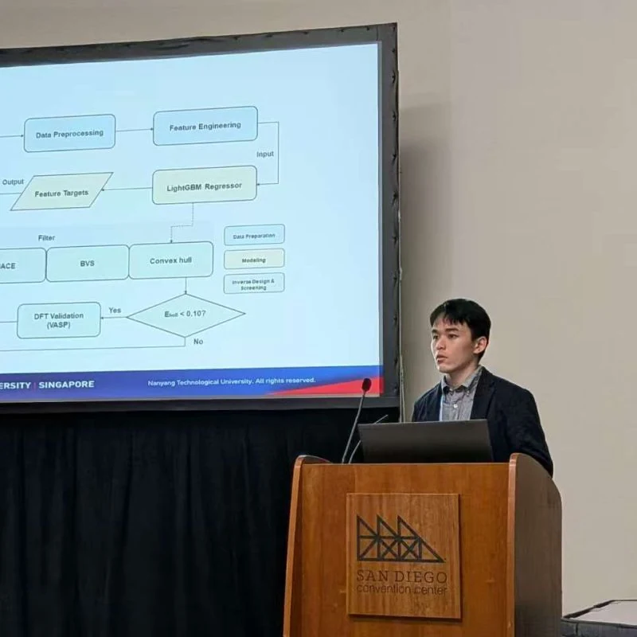

Quantitative Microscopy and Informatics for Property Prediction in Commercial Stainless Steels
Microscopy & Microanalysis (M&M 2026), Milwaukee, WI, USA.
Selected Outputs
Conference presentations, accepted abstracts, submitted work, data publication, and manuscripts in preparation.
Conferences
Microscopy & Microanalysis (M&M 2026), Milwaukee, WI, USA.
The Minerals, Metals & Materials Society (TMS 2026), San Diego, CA, USA.

International Conference of Undergraduate Research (ICUR 2025), Singapore.
Publications
Submitted to Scripta Materialia.
ESTAD 2025, Verona, Italy. Related data and supplementary materials published in DR-NTU Data. DOI: 10.21979/N9/NYRGAA.
Research manuscripts in preparation across H2O2 electrosynthesis, prototype-constrained inverse design, and process-structure-property prediction.